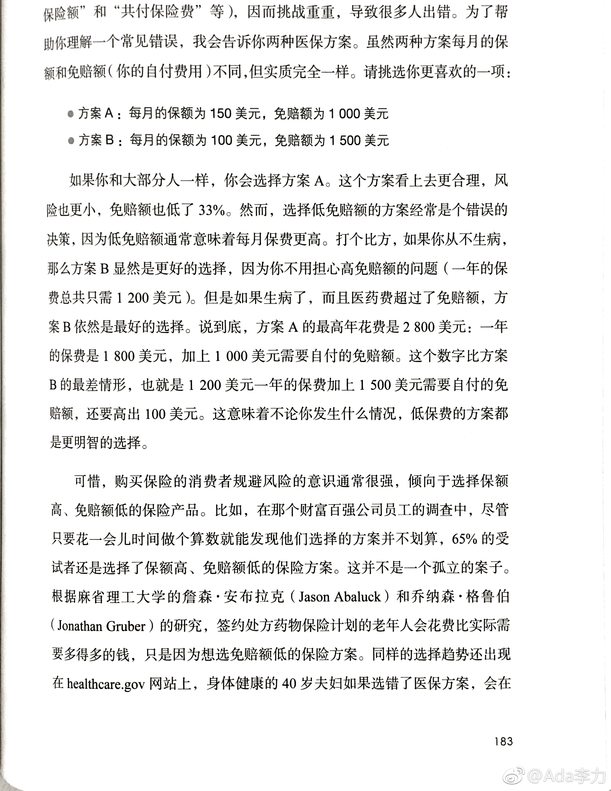

#读书# 即使是二选一的问题，很多人也会选错。
比如这两个保险选项，假定其它保险内容都一样
方案A：每月保额150元，免赔额1000元
方案B：每月保额100元，免赔额1500元
多数人选了A方案。然而大多数情况方案A不划算。
我想先从保险本质说说这个现象。保险目的是为风险兜底。所以，最好的结果是你从来不需要去找保险公司理赔。因此，保险内容相同时，保费越低越好。别去想免赔额，你要期望自己最好用不到它。
但为什么多数人因为免赔额低而选方案A呢？我猜想大多数人考虑的是付出和得到的关系。因为付出了保费，所以期望理赔时得到更多，这倒是符合通常商品交易里的思路，我付出钱后，当然希望得到些，即使这个得到体现在免赔金额里。
不思考本质，而只套用惯常思路，大概是做了错误选择的原因之一。
比如这两个保险选项，假定其它保险内容都一样
方案A：每月保额150元，免赔额1000元
方案B：每月保额100元，免赔额1500元
多数人选了A方案。然而大多数情况方案A不划算。
我想先从保险本质说说这个现象。保险目的是为风险兜底。所以，最好的结果是你从来不需要去找保险公司理赔。因此，保险内容相同时，保费越低越好。别去想免赔额，你要期望自己最好用不到它。
但为什么多数人因为免赔额低而选方案A呢？我猜想大多数人考虑的是付出和得到的关系。因为付出了保费，所以期望理赔时得到更多，这倒是符合通常商品交易里的思路，我付出钱后，当然希望得到些，即使这个得到体现在免赔金额里。
不思考本质，而只套用惯常思路，大概是做了错误选择的原因之一。
- 